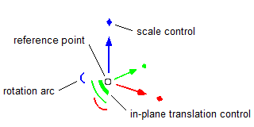
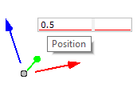
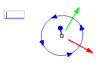
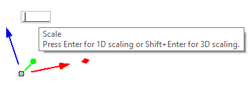
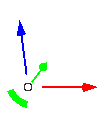

操纵柄快速参考


参考点
拖动操纵柄的参考点即可自由平移所选对象。拖动时按鼠标右键（或 Esc 键）可取消拖动。
按住 Alt 拖动参考点可移动操纵柄而不移动所选对象。（右键单击/Esc 不会取消这种拖动。）
按住 Alt 单击对象上的任意位置（点、棱边、多边形），可将操纵柄移动到该位置而不移动所选对象。
- 右键单击参考点可查看操纵柄的上下文菜单：
- 将操纵柄移至…：该命令可让您将操纵柄移动到指定坐标而不移动所选对象。
- 重置位置：该命令将操纵柄移回其默认位置。
- 可调整大小的操纵柄：此命令显示用于调整操纵柄大小的控件。使用同一命令可隐藏这些控件。
- 显示/隐藏…控件：操纵柄上的某些控件可以使用这些命令显示或隐藏。
- 快速参考：显示此帮助页。
Axes


单击某个轴会显示编辑字段，您可以在其中输入沿该轴的新位置或偏移。工具提示会说明各个编辑字段。所选对象将与操纵柄移动相同的量。
拖动某个轴可沿该轴移动所选对象。 拖动所选对象时，按 Esc 键或鼠标右键将取消拖动。
一维捕捉的方法是：在某个轴上按住鼠标按钮，然后在按住 Shift 键的同时将鼠标指针拖到可捕捉的位置（体点、控制点、几何数据中的点，或投影到几何数据中多边形上的点）。松开鼠标按钮后，参考点将沿该轴移动到捕捉位置，当前所选对象也将移动相同的量。
按住 Alt 拖动某个轴可沿该轴移动操纵柄而不移动所选对象。
旋转弧


旋转围绕参考点进行。 拖动旋转弧可以交互方式使当前所选对象绕相关轴旋转。
单击某个弧会显示一个编辑字段，您可以在其中输入使所选对象旋转的角度值（正或负）。正旋转方向由圆上的箭头指示。
缩放控件


缩放相对于参考点进行。 拖动缩放控件可以交互方式在一个维度上调整所选对象的尺寸。
单击某个缩放控件会显示一个编辑字段，您可以在其中输入缩放值。按 Enter 进行一维缩放，或按 Shift+Enter 进行三维缩放。 编辑字段上的工具提示说明了如何进行三维缩放。
三维缩放也可以通过以下方式完成：在缩放控件上按下鼠标按钮，然后按住 Shift 键，再移动鼠标。
面内平移


拖动面内平移控件可移动所选对象，但会将其移动限制在垂直于同色轴的平面内。
Tab 键
当块体构建窗格或几何窗格具有输入焦点且操纵柄可见时，按 Tab 键会将输入焦点移到对象属性控件组中的“参考点”编辑字段（假设对象属性控件组已打开）。在那里您可以输入新坐标。
| 这些内容对您有帮助吗？… 版权与免责声明 | FLAC3D © 2019, Itasca | 原文更新于 2020 年 10 月 8 日 |